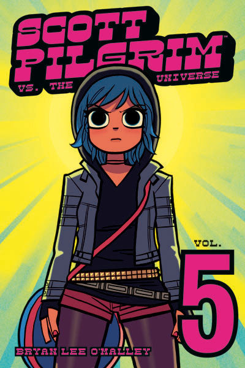

Scott Pilgrim vs. the Universe opens on the 27th of September 2005, Scott Pilgrim's 24th birthday. It then skips ahead to a Day of the Dead-themed party being thrown by Julie Powers in her new studio apartment. Whilst at the party, Ramona Flowers spots her next two evil ex-boyfriends, the twins Kyle & Ken Katayanagi, who were invited to the party by Julie. Scott approaches them and prepares to fight, but instead is forced to fight their robot, Robot-01. Whilst Scott is fighting the robot, Knives Chau talks to Stephen Stills, who reveals that he and Julie have broken up again; he then tells Knives that Scott cheated on Knives with Ramona, which shocks Knives. Scott then defeats Robot-01 and "wins the party".
November continues to show Scott and Ramona's relationship falling into a monotonous routine, with Ramona clearly being distressed about something and becoming increasingly distant to Scott.
Later, Sex Bob-omb prepares for a show at Sneaky Dee's that Julie sprung on the band as revenge for their break-up, even though they haven't rehearsed in months due to Stephen Stills' persistent but fruitless recording, causing the band's performance to have severely dropped from when they performed at Lee's Palace. Backstage, Stephen Stills tells Scott that they're opening with Erasmus; however, Scott forgets this and tells Kim that they're starting with Herself the Elf, causing Stephen and Kim to attempt to start out with entirely different songs. Meanwhile, Ramona encounters Knives in the bathroom, and after a small bout, Knives tells her that Scott cheated on them at the same time. Ramona leaves to find Scott onstage destroying another one of the twins' robots, with his bass guitar which he breaks in the process, revealing that the concert was clever trap deployed by the Twins to try and get Scott off-guard. On the way home, Scott admits that he forgot his keys and Ramona refuses to let him in for the night, claiming that Scott needs to learn a lesson about remembering his key and that she needs some time alone.
Scott ends up staying with Wallace, who asks about the twins. Scott tells him that their last name is "Katamari," in reference to the videogame Katamari Damacy. Wallace reveals to Scott that he has found pictures of Gideon Graves, all of which are blurry or indistinct.
The next day, Scott goes to No-Account Video to find Kim quickly leaving and quickly tells Scott that he "[doesn't] need to see Hollie" implying that the two had a fight. Scott then goes with Kim to Stephen Stills' place to try and find him, whilst there, they come across Young Neil who is smoking in his room and act rather coldly to Scott and Kim.
That night, Scott stays on Kim's couch and asks Kim to help arrange a setup so that he can casually bump into Kim and Ramona while they get coffee, the setup is so pathetic that it actually works and Ramona is left hysterical. The three then begin to talk, and Kim reveals that her boyfriend, Jason Kim (who Scott didn't even know was dating Kim), had cheated on her with Hollie, during the conversation Ramona's head begins to glow, while Scott tries to casually keep the conversation going, Kim goes for the blunt option and asks what's wrong with Ramona's head, confusing Ramona as she is unaware of the glow, however, when Kim takes Ramona to the bathroom to show her the glow, it stops.
The group then attends another one of Julie's parties and Ramona bumps into Young Neil, who fires her a snarky retort. Scott then encounters the Twins once again and is forced to fight yet another robot. Meanwhile, Ramona is smoking on the balcony where Kyle Katayanagi approches her and reveals some truths about Ramona's nature, Kim then approaches Ramona on the balcony, who Ramona believes may be Kyle again and starts shouting. When Kim tells her to settle down, her head glows again and Kim takes a picture with her camera phone of Ramona's head.
Kim and Ramona proceed to get drunk on Jose Cuervo tequila, and after defeating the robot, Scott joins them. Later, Kim takes the subway home, and is kidnapped by the twins. Ramona and Scott stumble home and have sex. Afterward, Ramona confronts Scott about whether he cheated on her with Knives or vice versa. He blurts out that he cheated on Knives with her. She demands an answer to how different one action was to the other, only getting an answer that she wasn't the one who was wronged. Her head then glows again in anger and annoyance, and she tells Scott that he is a bad person and "another Evil Ex waiting to happen". Fearing that his stupidity may lead to an impending breakup, Scott apologizes and vows to make everything better upon defeating the twins the next day and then Gideon. Scott then falls asleep, and then wakes up to find Ramona missing, terrifying Scott, only to be calmed when he discovers that Ramona was only in the shower, he then notices a text message from Kim about her kidnapping. Scott quickly leaves, telling Ramona where he went, Ramona however does not hear this and storms out of the bathroom demanding to know what Scott was yelling about only to discover that he had already left. Ramona then removes a towel from her head, revealing that she has had a haircut.
Scott arrives at a construction site to rescue Kim. Scott however is unable to perform at his fullest as he nursing a hangover and is troubled by his relationship with Ramona. The Twins explain that Ramona cheated on both of them with one another and mock his belief in her fidelity. Kim attempts to bolster Scott's morale whilst also attempting to draw his attention to herself, but fails. As he begins to lose the fight, Kim lies and says that Ramona text messaged her to give Scott encouragement. Scott is motivated, and defeats the Twins simultaneously, racking up a massive bonus.
Scott rushes back to the apartment to find Ramona who tells Scott that she is a bad person. Scott tries to calm her down, saying that he loves her no matter what, however, Ramona's head begins to glow brighter and brighter and she disappears, claiming that she "had a good time." Scott tries to look for her, but instead lets her cat out and locks himself out of her apartment.
Over the next few days, Scott bed-hops and tries to get Ramona's cat to come back by feeding it fish or fish-like items. Scott then goes to Kim's who reveals that Hollie had sold the couch, forcing Scott to spend the night sharing a bed with Kim. Whilst there, Kim tells Scott that she is going to move back home with her parents. Scott spends a night at Wallace's place where he meets Mobile, who Scott immediately mistakes for Gideon, simply because the two wear glasses. A couple of days later, Kim departs to her parents and Scott sees her off. Scott apologizes to her for his behavior, for which she accepts.
Some time later, Scott moves into a new apartment paid for by his parents. Whilst there, Scott notices a person with thick-rimmed glasses, who he mistakes for Gideon and kicks to the ground. Scott's parents then reveal that the person is his brother, Lawrence West, who Scott vaguely remembers. Lawrence came to get his bass guitar back from Scott, who gives it to him (failing to mention that it is broken) and the family leaves Scott alone. Scott then receives a telephone call from Gideon, who asks, "When would it be convenient for you to die?"